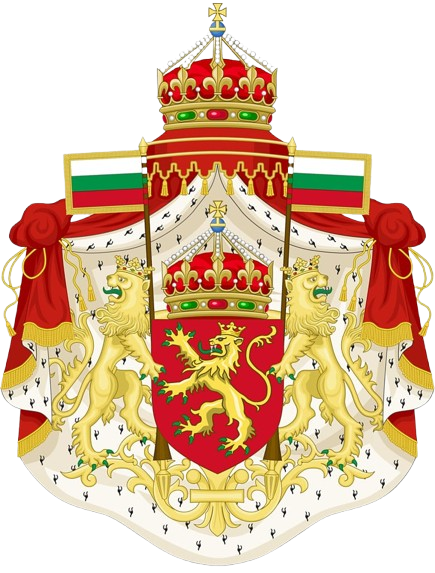
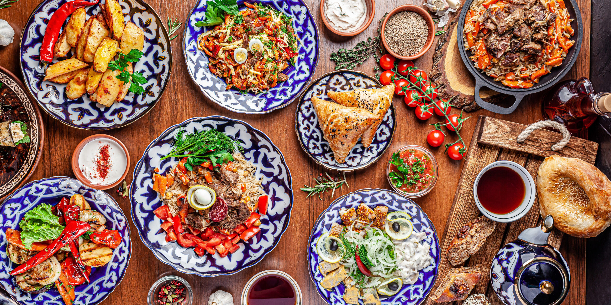

Bulgarian cuisine is known for its rich flavors, fresh ingredients, and influences from neighboring countries. Many traditional dishes combine vegetables, dairy products, herbs, and grilled meats to create hearty and satisfying meals.
One of the most famous Bulgarian foods is banitsa, a pastry made with layers of filo dough, eggs, and cheese. It is often eaten for breakfast or during special occasions. Another popular dish is the shopska salad, which contains tomatoes, cucumbers, onions, peppers, and grated white cheese.
Grilled meat dishes such as kebapche and kyufte are also widely enjoyed across the country. These dishes are often served with bread, vegetables, and traditional sauces.
Bulgaria is also famous for its yogurt, which is known for its unique taste and health benefits. The bacteria used in Bulgarian yogurt, Lactobacillus bulgaricus, gives it a distinctive flavor that has made it popular around the world.